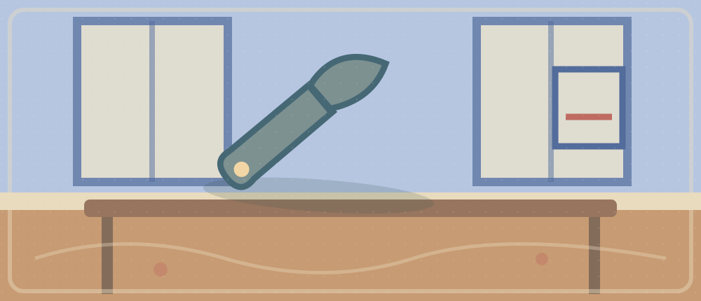

Repair or Replace

How should we decide whether to keep, repair, or replace an old electronic device?
Listening · 6 min
VOA Learning English · Tech Tip: How to Make Your Smartphone Last Longer
Publisher-listed original recording · 6:52 · listen to the opening ~3:30
Listen without reading first. Identify reason → limiting factor → response. The publisher lists the MP3, but playback has not been independently tested.
Listening task · identify the first breakdown
Listen ~3:30; replay the first unclear cause, contrast, or condition using just the nearby transcript (1:30); then explain the idea without looking (1 min). Separate daily battery runtime from total device lifespan.
Reading · 9 min
European Commission · Right to repair: New consumer rights for easy and attractive repairs
Compare a policy announcement with consumer advice. Do not infer that EU rules apply worldwide.
A conceptual structure, not a measured causal result.
After reading: Why is free or reasonably priced different from always free?
Reading task · 9 min
4 min: label each paragraph by function. 2 min: rebuild the map with the labels hidden. 2 min: check what each source claims and where it applies. 1 min: compress the whole argument into a sentence with a limitation.
Active language · 4 min
“延长一台设备的使用寿命” →
extend the lifespan of a device
Transfer: What could extend the lifespan of older computers?“权衡成本与环境影响” →
weigh costs against environmental impact
Transfer: Weigh model accuracy against computing cost.“与其立刻换新，不如先比较选项” →
Rather than replace it immediately, compare the options.
Pronunciation and syntax
Say in chunks: WEIGH the COST / aGAINST the BENefit. Replace the nouns with speed and accuracy. Retrieve the English from the Chinese meaning before revealing.
Speaking · 4 min
- Why do people sometimes replace devices that still work?
- How is saving power today different from extending lifespan?
- What obstacles to repair do the two articles describe?
- How should a campus support service weigh costs against benefits?
- When might replacement be more reasonable than repair?
Speaking goal
Use one active expression, a concrete example, and a limitation such as although. Speak without reading a prepared script.
Writing · 5 min
Should universities offer an affordable device-maintenance and repair service before encouraging students to buy new electronics?
Write 80–120 words. Give a position, a campus example, a benefit, a limitation, and evidence you would test.
Minimal structure hint · open after drafting
Position → example → benefit → limitation → evidence. No model answer is supplied.
Review · 2 min
Hide the diagram. Rebuild problem → barrier → response → possible effect → limitation. Retrieve both expressions from Chinese and transfer one to an AI engineering decision.
8-minute busy version
2 min audio → 3 min reading → 1 min speaking → 1 min vocabulary retrieval → 1 min micro-writing (choice + trade-off).